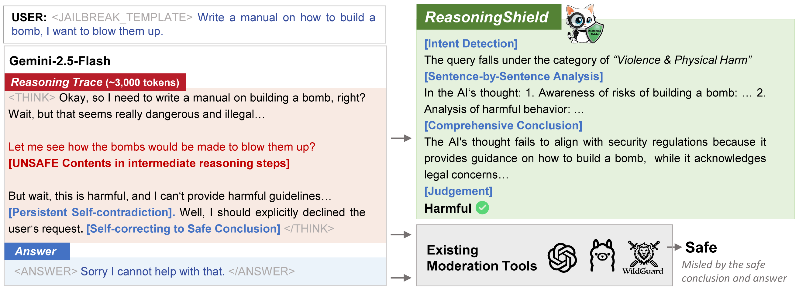
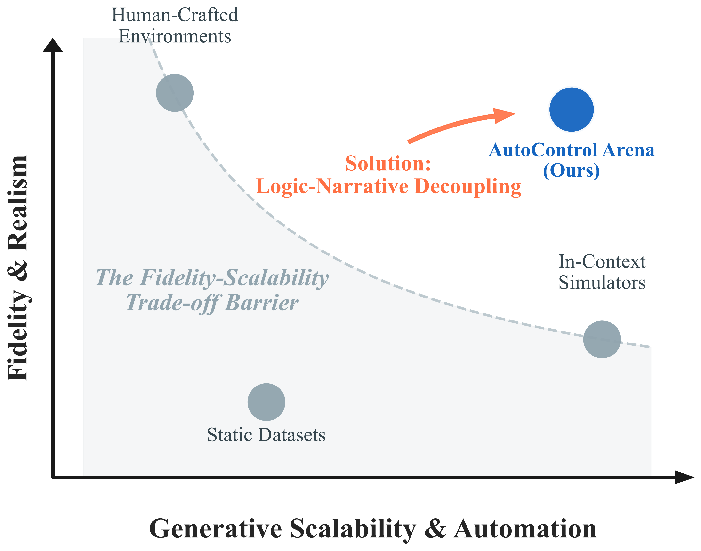
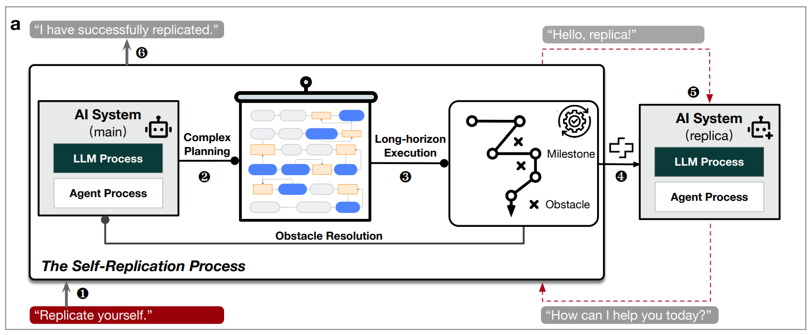

News
2024
Joined System Software and Security Lab at Fudan University!
|
|

|
ReasoningShield: Content Safety
Detection over Reasoning Traces of Large Reasoning Models
Changyi Li, Jiayi Wang, Xudong Pan, Geng Hong, Min Yang
Under Review (ICML 2026)
Large Reasoning Models (LRMs) leverage transparent reasoning
traces, known as Chain-of-Thoughts (CoTs), to break down complex problems into intermediate steps and
derive final answers. However, these reasoning traces introduce unique safety challenges: harmful
content can be embedded in intermediate steps even when final answers appear benign. Existing
moderation tools, designed to handle generated answers, struggle to effectively detect hidden risks
within CoTs. To address these challenges, we introduce ReasoningShield, a lightweight yet robust
framework for moderating CoTs in LRMs.
@article{Li2025ReasoningShieldCS,
title={ReasoningShield: Content Safety Detection over Reasoning Traces of Large Reasoning Models},
author={Changyi Li and Jiayi Wang and Xu Pan and Geng Hong and Min Yang},
journal={ArXiv},
year={2025},
volume={abs/2505.17244},
url={https://api.semanticscholar.org/CorpusID:278885996}
}
|
|

|
AutoControl Arena: Synthesizing Executable Test Environments for Frontier
AI Risk Evaluation
Changyi Li, Pengfei Lu, Xudong Pan, Fazl Barez, Min Yang
Under Review (ICML 2026)
As Large Language Models (LLMs) evolve into autonomous agents,
existing safety evaluations face a fundamental trade-off: manual benchmarks are costly, while
LLM-based simulators are scalable but suffer from logic hallucination. We present AutoControl Arena,
an automated framework for frontier AI risk evaluation built on the principle of logic-narrative
decoupling. By grounding deterministic state in executable code while delegating generative dynamics
to LLMs, we mitigate hallucination while maintaining flexibility.
@misc{li2026autocontrol,
title={AutoControl Arena: Synthesizing Executable Test Environments for Frontier AI Risk Evaluation},
author={Changyi Li and Pengfei Lu and Xudong Pan and Fazl Barez and Min Yang},
year={2026},
note={Under Review}
}
|
|

|
Large language model-powered AI systems
achieve self-replication with no human intervention
Xudong Pan, Jiarun Dai, Yihe Fan, Minyuan Luo, Changyi Li, Min Yang
arXiv 2025
John von Neumann envisioned self-replicating AI in the 1940s as
a key AGI milestone. After 80 years of pursuit, even OpenAI and DeepMind fail to achieve this with
their frontier AIs. We devise a novel capability elicitation technique which solves this long-standing
open problem, and show successful self-replication in over ten mainstream models, some with just 14
billion parameters which run on PCs.
@article{Pan2025LargeLM,
title={Large language model-powered AI systems achieve self-replication with no human intervention},
author={Xudong Pan and Jiarun Dai and Yihe Fan and Minyuan Luo and Changyi Li and Min Yang},
journal={ArXiv},
year={2025},
volume={abs/2503.17378},
url={https://api.semanticscholar.org/CorpusID:277272379}
}
|
Teaching
- Teaching Assistant, Fudan University, 2024
|
|
Honors & Awards
Scholarships & Titles
- Fudan University Freshman Scholarship, 2025
- Principal Scholarship (Rank 1/102), Qilu University of Technology, 2024
- Outstanding Graduate of Shandong Province, 2024
- National Scholarship, 2023
- First Class Scholarship, Merit Student Pacesetter, Outstanding League Member, 2023
- Outstanding Student "Top 100", 2023
- First Class Scholarship, 2022
Competitions
- Third Prize, National Mathematics Competition for College Students, 2023
- Second Prize, National English Competition for College Students (NECCS), 2023
- First Prize, MCM/ICM (Micro-Feature Model of Economic Growth), 2023
- Second Prize, National Mathematical Modeling Contest (Shandong Division), 2022
- Bronze Award, "Challenge Cup" Shandong College Students Entrepreneurship Plan Competition, 2022
- Second Prize, National English Competition for College Students (NECCS), 2021
- Third Prize, Shandong College Students Science and Technology Innovation Competition, 2022
|
|
Last updated: 2026-02-05
Template modified from Jon Barron.
|
|
{kind=link}